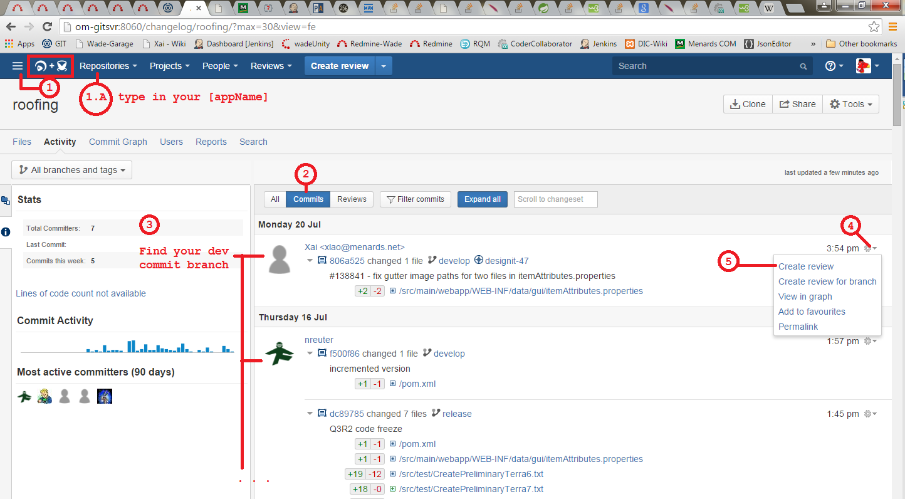
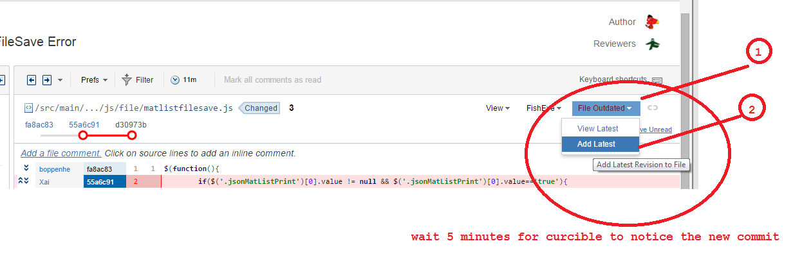

Crucible + Fish Eye
This is the new way we revie codes. Before we were using an online software called Code Collaborator. Since July 2015, we've switched over to this.
Creating a Review
For feature branches or bug fixes.
- Log into Stash
- top left corner pull down
- Fisheye + Crucible
- Create a Review, located at top of page
For develop branches
- Log into Stash
- Fisheye + Crucible
- Repositories > type in Roofing [appName]
- Commits > look for your branch
- 
Adding revision to pre-existing reviews
When you commit, say a revision to develop branch, it takes about 5 minutes for Cucible to notice the new change.
Once the new change has been updated to crucible, you can simple add the new revision from the review.

Deleting a Review
- Close or Abandon Your Review, depending if the review has been created or not yet
- Also check your draft inbox
- After you close or abandon, visit your abandon inbox and delete the review from there
Commenting Reviews
- You cannot delete a comment if another person/review/user is tag in the comment. You must edit the comment and remove the tagged users before you can delete the comment.
- If someone else has replied to your comment, you cannot delete your comment. The replier must remove their comment before you can delete your comment.